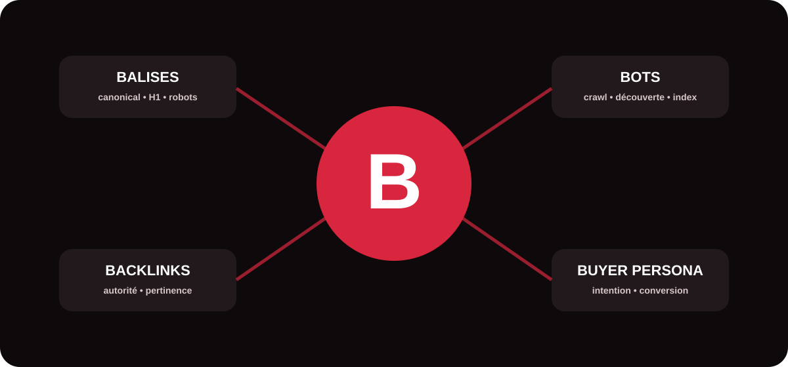

Le vocabulaire du référencement mêle HTML, marketing, acquisition et fonctionnement des moteurs de recherche. Ce glossaire a été conçu comme une ressource pédagogique : chaque terme est défini, replacé dans son contexte et accompagné de conseils pratiques. Il s’adresse aussi bien aux décideurs qu’aux équipes marketing souhaitant mieux piloter leurs actions SEO.

Bottom of Funnel (BoFu)
Le Bottom of Funnel, ou BoFu, désigne la partie basse du tunnel de conversion. L’internaute connaît déjà son besoin, a comparé plusieurs solutions et se rapproche d’une décision. Les contenus BoFu sont donc orientés vers la preuve et l’action : pages services, comparatifs, études de cas, démonstrations, témoignages ou demandes de devis. En SEO, ils ciblent souvent des requêtes à forte intention commerciale.
Balise Meta Viewport
La balise meta viewport indique au navigateur comment adapter l’affichage d’une page à la largeur de l’écran. Elle est essentielle à une expérience mobile correcte. Une configuration classique est <meta name="viewport" content="width=device-width, initial-scale=1">. Elle ne constitue pas à elle seule une optimisation SEO, mais elle participe à la compatibilité mobile et à la qualité d’utilisation du site.
Bots
Un bot est un programme automatisé qui parcourt ou interagit avec des contenus en ligne. Les moteurs utilisent des crawlers comme Googlebot pour découvrir des URL, récupérer les pages et alimenter leurs systèmes d’indexation. Tous les bots n’ont cependant pas la même fonction : certains servent la recherche, d’autres l’archivage, l’analyse, la surveillance ou des services d’IA. Une stratégie technique saine contrôle leur accès sans bloquer accidentellement les robots utiles.
Balises meta
Les balises meta fournissent dans le <head> des informations sur une page. Certaines influencent la manière dont les moteurs explorent, indexent ou présentent un contenu. Parmi les plus connues figurent la meta description, la meta robots et la meta viewport. Toutes les balises meta n’ont pas un impact direct sur le classement : leur rôle dépend de leur nature et de leur prise en charge par les moteurs.
Balise canonical
La balise canonical (rel="canonical") sert à indiquer la version d’URL que l’on préfère voir considérée comme principale lorsque plusieurs pages sont identiques ou très proches. Elle aide à consolider les signaux et à limiter les ambiguïtés liées aux duplications. Elle doit pointer vers une URL cohérente, accessible et réellement représentative du contenu.
Balise H1
La balise H1 correspond généralement au titre principal visible d’une page. Elle aide les utilisateurs et les moteurs à identifier immédiatement le sujet central. Un H1 clair, descriptif et aligné avec l’intention de recherche est préférable à un titre vague ou surchargé de mots-clés. Les sous-thèmes sont ensuite organisés avec des H2, H3 et niveaux inférieurs selon la structure du contenu.
Brand content
Le brand content désigne les contenus conçus pour exprimer l’univers, l’expertise, les valeurs ou le point de vue d’une marque. Guides, études, vidéos, podcasts ou dossiers experts peuvent renforcer la notoriété tout en créant des actifs utiles au SEO. Le meilleur brand content ne se limite pas à promouvoir : il apporte une information suffisamment intéressante pour être consultée, partagée ou citée.
Balise meta keywords
La meta keywords permettait historiquement de renseigner une liste de mots-clés associés à une page. Elle n’est plus un levier de référencement Google et ne doit pas être confondue avec le travail sémantique réel d’un contenu. Aujourd’hui, l’effort doit porter sur la pertinence de la page, son vocabulaire, sa structure, les entités abordées et la satisfaction de l’intention de recherche.
Balise meta robots
La meta robots donne des directives aux robots compatibles concernant l’indexation et certaines modalités d’affichage dans les résultats. Par exemple, noindex demande de ne pas indexer la page. Ces directives doivent être utilisées avec prudence : une mauvaise configuration peut rendre invisibles des pages stratégiques. Pour que le robot puisse lire une directive présente dans la page, il doit pouvoir accéder à celle-ci.
Black hat
Le Black Hat SEO regroupe des pratiques cherchant à manipuler les classements en contournant les règles des moteurs : automatisation abusive, dissimulation, liens artificiels ou autres procédés trompeurs. Même lorsqu’elles produisent un effet temporaire, ces méthodes exposent un site à une perte de visibilité et à des actions correctives. Une stratégie durable privilégie la valeur éditoriale, une technique propre et l’acquisition de signaux d’autorité crédibles.
Balises meta description
La meta description résume le contenu d’une page. Elle peut être utilisée par un moteur pour composer l’extrait présenté sous le titre dans les résultats, même si celui-ci peut choisir un passage différent. Une bonne description est unique, fidèle au contenu et suffisamment persuasive pour aider l’utilisateur à comprendre l’intérêt de la page. Elle agit surtout sur la qualité de présentation et le potentiel de clic plutôt que comme un simple emplacement à mots-clés.
Buyer persona
Un buyer persona est une représentation structurée d’un type de client cible : besoins, freins, objectifs, contexte de décision et comportements de recherche. En SEO, ce travail évite de produire des contenus uniquement guidés par le volume de recherche. Il permet d’aligner les sujets, le niveau de langage, les preuves et les appels à l’action avec les personnes réellement susceptibles de devenir clientes.
Balise de données structurées
Les données structurées utilisent un format standardisé, souvent JSON-LD avec le vocabulaire Schema.org, pour décrire explicitement certaines informations d’une page : organisation, produit, recette, événement, fil d’Ariane, etc. Elles aident les moteurs à interpréter le contenu et peuvent rendre certaines pages éligibles à des résultats enrichis. Le balisage doit correspondre au contenu réellement visible et respecter les types pris en charge.
Backlink
Un backlink est un lien provenant d’un autre site et pointant vers une page de votre domaine. En SEO, les backlinks peuvent contribuer à la découverte des pages et à l’évaluation de leur popularité ou de leur crédibilité. Leur valeur dépend fortement de la pertinence du site source, de son contexte éditorial, de la nature du lien et du caractère naturel du profil global. Quelques liens éditorialement cohérents peuvent être plus intéressants qu’un grand volume de liens artificiels.
Balise hreflang
L’attribut hreflang aide les moteurs à identifier les versions linguistiques ou régionales équivalentes d’un contenu. Il est particulièrement utile pour les sites internationaux afin de présenter la bonne version aux utilisateurs selon la langue ou la zone ciblée. Les annotations doivent être cohérentes et réciproques ; elles ne remplacent pas la canonical, qui répond à une problématique différente.
Synthèse : à quoi servent ces notions ?
| Famille | Termes concernés | Enjeu principal |
|---|---|---|
| Technique | Viewport, canonical, H1, meta robots, hreflang, données structurées | Faciliter l’interprétation, l’indexation et l’affichage. |
| Exploration | Bots | Comprendre qui accède au site et comment. |
| Popularité | Backlink | Renforcer les signaux externes et l’autorité. |
| Contenu | Brand content, meta description | Mieux informer, différencier et attirer. |
| Marketing | BoFu, Buyer persona | Aligner contenu, intention et conversion. |
| Risque | Black Hat | Identifier les pratiques non durables. |
Transformer le vocabulaire SEO en décisions utiles
Maîtriser ces termes permet de mieux dialoguer avec une agence, un développeur ou une équipe marketing, mais l’essentiel reste leur application cohérente. Une balise correctement configurée ne compense pas un contenu faible ; un backlink ne corrige pas une architecture confuse. L’efficacité vient de l’association entre technique, contenu, autorité et compréhension du parcours client.
Besoin d’un diagnostic SEO/GEO de votre site ?
MinoSeo accompagne les entreprises dans l’analyse technique, la stratégie de contenu, le netlinking et l’optimisation de leur visibilité sur les moteurs et les environnements IA.
Demander un audit gratuit